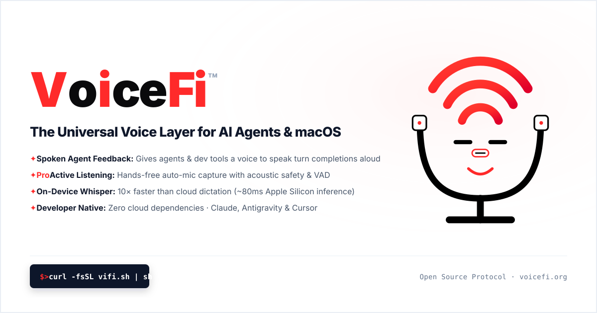

The Official VoiceFi Brand Identity
The Cyber Plug Face with the Wi-Fi Hat & USB-C Audio Input in high-contrast Studio White, Precision Black, and Electric Studio Red.
01 / Master OpenGraph & GitHub Banner
assets/voicefi-hero-banner.svg
⚡ Master Vector Marks (Clean Base)
High-contrast 512×512 vectors with Electric Red brand signal
Deep Obsidian & Electric Red
Obsidian ceramic backdrop, crisp white metal U-cradle with vibrant Electric Red Wi-Fi broadcast signal and glowing diaphragm core.
Standalone Vector Symbol
Pure transparent vector emblem engineered for seamless scaling from 16px favicons to high-res navigation bars and hardware badges.
02 / Official Horizontal Wordmark Lockup
assets/logo-voicefi-wordmark.svg03 / Native macOS Menu Bar Vector (22×22)
assets/voicefi-menu-bar-icon.svgmacOS Status Bar Template
Precision Wi-Fi studio condenser template (native macOS dark/light adaptation)
04 / Terminal Workflow (vifi.sh)
vifi CLI$ curl -fsSL https://vifi.sh | sh
✓ VoiceFi (vifi) v0.1.0 installed into ~/.local/bin/vifi
$ vifi start
🎙️ Ambient Voice Bus active · Press Control + T to dictate